Human-Centered Storytelling
This section frames data visualization as human-centered storytelling: choosing visuals that are truthful, interpretable, and purposeful for a specific audience. Building on Wilke (2019), it links aesthetic choices — position, color, shape, and size — to human perception, then pairs them with sound research methods. It distinguishes description, prediction, and explanation while identifying common pitfalls such as bad proportions, misleading color scales, and poor aspect ratios. The section also addresses how to separate correlation from causation, surface confounds and subgroup effects, and recognize reasoning errors including cherry-picking, arbitrary thresholds, and misread axes. Finally, it introduces a practical storytelling workflow — Who/What/How → Big Idea → 3-Minute Story — so that graphics do more than decorate: they clarify decisions and drive action.
Reference:
Wilke, C. O. (2019). Fundamentals of Data Visualization.
O’Reilly Media. ISBN: 9781492031086.
Data Visualization and Why Good Research Methods Matter
Wilke (2019) argues that data visualization combines both art and science. A visualization must accurately represent the data without misleading, while also being visually appealing and interpretable. These two requirements are in tension: misrepresentation — such as making unequal values appear similar — undermines the scientific integrity of the work, while poor aesthetics — distracting colors or imbalanced design — obscure the message and hinder interpretation.
The Role of Research Methods in Data Visualization
Good visualization is inseparable from good research methodology. The purpose of the analysis shapes every design decision:
- Describe behavior — identify trends, patterns, and outcomes in data. Use visualizations to summarize patterns clearly for a specific audience. Example: a bar chart of weekly active users across product features.
- Predict behavior — use past data to anticipate future actions or outcomes. Design visuals that highlight trends and forecasts to support informed decisions. Example: a line chart projecting next quarter’s sales based on the past 12 months.
- Explain behavior — go beyond correlation to investigate causal relationships. Ground visualizations in methods that distinguish causation from correlation and avoid misleading graphics. Example: a side-by-side chart comparing control vs. treatment group outcomes with confidence intervals labeled.
- Understand behavior — build a deeper, contextual understanding of why patterns occur. Use storytelling and layered visuals to clarify motivations, environments, or external influences. Example: a dashboard combining time, geography, and user segment to explain why sales dropped in one region.
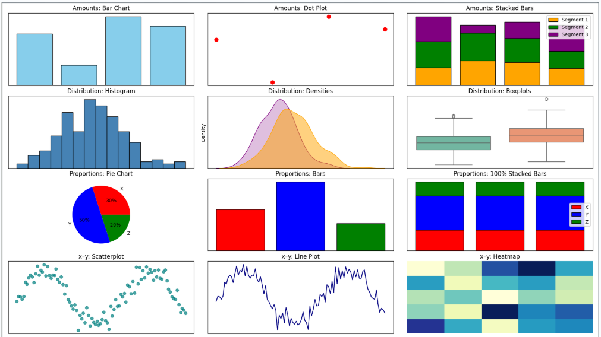
Aesthetics and Types of Data
Visual properties — called aesthetics — are the perceptual channels through which data values are communicated to the viewer:
- Position — the most perceptually precise aesthetic; data points are placed at specific locations along perpendicular, evenly-spaced axes. Humans are more accurate at judging position than any other visual property.
- Size — represents magnitude through the area or diameter of elements. Example: bubble charts where larger circles represent larger populations.
- Color — encodes categories or values using distinct hues or continuous scales.
- Shape — differentiates groups using markers such as circles, squares, diamonds, and triangles. Particularly useful for black-and-white or color-blind-accessible charts.
- Line width — encodes values through thickness, from thin to thick.
- Line type — distinguishes categories using solid, dashed, dotted, or dash-dot styles.
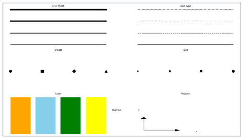
Color in Data Visualization
Color serves three fundamental purposes in data visualization:
- Distinguish groups — use color to separate categories without a natural order, such as countries on a map or product brands. Each category gets a distinct, equally prominent hue.
- Represent values — use continuous color scales to show quantitative data such as income, temperature, or speed. Lighter = lower, darker = higher (or vice versa).
- Highlight — use a single accent color to draw attention to the key element that supports the narrative, leaving everything else muted.
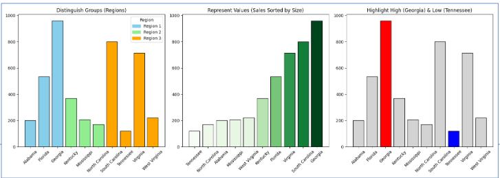
Common Pitfalls of Color Use
Color is powerful but must be purposeful, clear, and non-distracting. Poor color choices obscure or distort data:
- Encoding too much information — assigning unique colors to more than about six or seven categories overwhelms the viewer. Use direct labeling or group categories instead.
- Distracting color choices — coloring for decoration or using overly saturated hues draws attention away from the data. Example: rainbow-colored bars where each bar is a different hue for no analytical reason.
- Misleading color scales — nonmonotonic scales like rainbow distort value differences and emphasize arbitrary features of the data. A monochromatic scheme (different shades of one hue) encodes ordered data honestly; a non-monochromatic scheme (multiple distinct hues) is better suited to categorical data with no natural ordering.
- Not designing for color-vision deficiency — approximately 8% of men and 0.5% of women have some form of color-vision deficiency. Always test your palette with a simulator. Common deficiencies include red–green (deuteranomaly/protanomaly) and, less commonly, blue–yellow (tritanomaly).
The Good, The Bad, The Ugly, and The Wrong
Wilke (2019) offers a useful taxonomy for evaluating visualization quality:
- Good — the chart is clear, accurate, and honest. The aesthetic choices serve the data.
- Ugly — aesthetic problems exist (poor color, cluttered axes, low-resolution fonts), but the chart is otherwise clear and correct.
- Bad — perception problems: the chart is unclear, confusing, overly complicated, or unintentionally misleading in how it represents the data.
- Wrong — mathematical or factual problems: the chart is objectively incorrect (e.g., a pie chart whose slices sum to more than 100%).
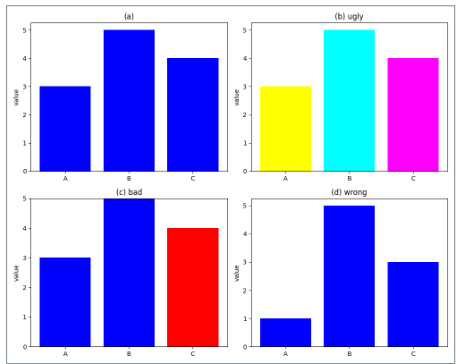
Monochromatic vs. Non-Monochromatic Color Scales
Data Source:
U.S. Census Bureau. (2023). TIGER/Line Shapefiles: Counties (2023) [Shapefile].
U.S. Department of Commerce.
Available at: https://www.census.gov/geographies/mapping-files/time-series/geo/tiger-line-file.html
A monochromatic scale (varying shades of one hue) encodes a single ordered dimension honestly — the viewer’s eye naturally reads darker as “more.” A non-monochromatic scale (multiple hues) is better for distinguishing unordered categories where no shade should appear more important than another.
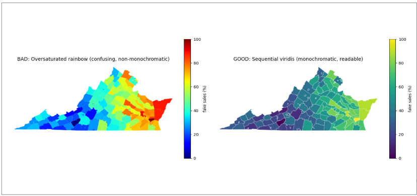
Bad Proportions: Pie Chart
The figure combines two variables — construction material (steel, wood, iron) and era of construction (crafts = before 1870, modern = after 1940). The chart is wrong because the percentages add up to more than 100%. The problem arises from overlap between the two variables: all modern bridges are made of steel, and most crafts bridges are made of wood. When overlapping categories are mixed into a pie chart, the slices cannot represent mutually exclusive parts of a whole — making the visualization mathematically invalid.
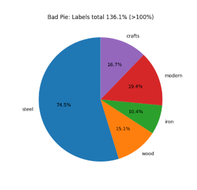
Data Source:
Yoram Reich and Steven J. Fenves, via the UCI Machine Learning Repository (Dua & Karra Taniskidou, 2017).
Bad Proportions: Bar Chart
Displaying the same data as a bar chart avoids the mathematical invalidity — bar heights do not need to add up to 100% — but the chart is still bad because it fails to show the overlap between groups. The viewer cannot see that modern bridges are also steel, or that most crafts bridges are wood. The relationship between the two variables — era and material — is invisible.

How to Fix That Chart
To correctly visualize the relationship between construction material and era, the designer should:
- Separate the two variables rather than mixing them into a single chart.
- Use a visualization that shows joint distributions — such as a grouped bar chart, stacked bar chart, or mosaic plot — that displays how the categories overlap.
- Make overlaps explicit — clarify in a title or annotation that some categories share membership.
- Ensure proportions are mutually exclusive — within each grouping, values should sum correctly.
Reasoning Errors in Data Visualization
Schmidt et al. (2023) examined how individuals mislead with charts through logical and interpretive manipulations — going beyond simple visual distortions. The researchers collected 9,958 Twitter posts containing COVID-19 data visualizations and categorized real-world examples of misleading argumentation strategies.
Reference:
Schmidt, A., Väänänen, K., Goyal, T., Kristensson, P. O., Peters, A., Mueller, S., Williamson, J. R., & Wilson, M. L. (Eds.). (2023).
Proceedings of the 2023 CHI Conference on Human Factors in Computing Systems.
Association for Computing Machinery.
https://doi.org/10.1145/3544548
Seven reasoning errors were identified:
- Misreading charts — drawing incorrect conclusions due to visual distortions or misinterpretation of chart elements.
- Cherry-picking — selecting only certain data points so the conclusion fits the limited evidence, even though it would not hold with a more complete dataset.
- Arbitrary thresholds — judging a phenomenon against a benchmark chosen without clear justification, either as a number or as a visual marker on the chart.
- Data quality issues — using data that is incomplete, inconsistent, or uncertain without communicating those limitations to the audience.
- Ignoring statistical nuance — overlooking key statistical details to make an argument appear stronger than it is.
- Misrepresenting scientific research — misusing or oversimplifying scientific studies, undermining public understanding and trust.
- False causal claims — inferring cause-and-effect from visual patterns without proper experimental or statistical support, especially dangerous when combined with cherry-picked data.
Misreading Charts: Coordinate Systems and Axes
Misreading charts means drawing incorrect conclusions due to visual distortions or misinterpretation of chart elements. Two key factors determine how clearly viewers read a chart:
Coordinate systems — whether axes are linear, logarithmic, or polar changes the apparent shape of the data. A linear y-axis that does not start at zero can visually exaggerate small differences; a log scale compresses large differences that might otherwise dominate the chart.
Aspect ratio — the ratio of a chart’s width to its height. This matters because human perception is more sensitive to angles and slopes than to absolute lengths. The same dataset presented as a wide, flat chart reads as “slow, gradual change,” while the same dataset as a tall, narrow chart reads as “rapid, dramatic change” — even though the numbers are identical.
Example: A line chart showing monthly website visits with an aspect ratio of 10:1 (very wide) might appear nearly flat — suggesting stable growth. The same chart with an aspect ratio of 2:1 (taller) would show a steep upward slope for the same data. Neither is “wrong,” but the choice shapes the story the viewer walks away with. Wilke recommends using the banking to 45° principle: choose the aspect ratio so that the average slope of the lines in the chart is approximately 45 degrees, which gives the most accurate visual impression of the rate of change.
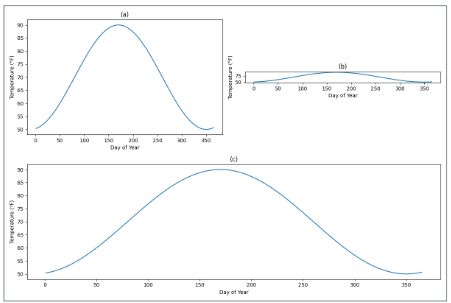
Cherry-Picking
Cherry-picking involves selecting only certain data points so that the conclusion fits the limited evidence, even though it would not hold with a more complete dataset. It takes two common forms:
- Cherry-picking individual data points — Example: citing one study that shows a treatment works while ignoring five studies that show it does not.
- Cherry-picking the time frame — Example: showing stock market performance only from the trough of a recession to the peak of a recovery to make returns look spectacular, omitting the preceding crash.

Arbitrary Thresholds
An arbitrary threshold is a benchmark chosen without clear, principled justification — either as a specific number or as a visual marker on a chart — used to make a pattern appear significant when no objective threshold exists. Example: drawing a horizontal line on a chart at the number 100 to imply that values below it represent “failure,” when 100 was chosen for convenience rather than any analytical or regulatory reason.

Data Quality Issues
Data quality issues arise when data is incomplete, inconsistent, or uncertain — particularly during fast-changing situations — and these limitations are not communicated to the viewer. A prominent example is the Johns Hopkins COVID-19 dashboard: it became a critical pandemic-tracking tool but faced significant early challenges from inconsistent and incomplete case reporting across U.S. counties and international jurisdictions, which created apparent “spikes” that were artifacts of reporting delays rather than actual surges in infections.
Misrepresenting Scientific Research
Scientific literacy is the ability to understand and evaluate scientific information well enough to make informed judgments as a non-expert. Its goal is calibrated trust — neither accepting all scientific claims uncritically nor rejecting science entirely.
Misrepresentation occurs when research findings are oversimplified, cherry-picked, or presented without proper context, leading non-experts to draw misleading conclusions. Example: a headline claiming “Scientists discover coffee prevents cancer” based on a single observational study, when the study actually found a weak correlation in one specific population and explicitly did not establish causation. A scientifically literate reader would ask: Was this a randomized controlled trial or an observational study? How large was the effect? Has it been replicated?
Ignoring Statistical Nuance
Ignoring statistical nuance means presenting an overall summary that obscures important variation. Three forms are especially common:
- Subgroup differences — variations across age, sex, geography, or health status that may be obscured by overall averages. Example: a medication that lowers blood pressure by 10 points on average may lower it by 15 points in younger adults but by only 3 points in older adults — the average conceals a clinically significant difference.
- Causation vs. correlation — correlation means two variables move together; it does not prove that one causes the other. Observational studies can identify associations but cannot reliably establish causation without additional evidence or experimental design.
- Confounding factors — variables related to both the independent variable and the outcome that create misleading associations. Example: if coffee drinkers also tend to be employed full-time and have better access to healthcare, a longer lifespan in that group might have nothing to do with coffee.
Correlation vs. Causation
Correlation measures the strength and direction of the linear relationship between two variables. Intuitively, a correlation of +1.0 means the two variables move in perfect lockstep upward; -1.0 means one rises exactly as the other falls; 0 means no linear relationship.
More formally: correlation is calculated as the covariance of two variables divided by the product of their standard deviations. The result is always a number between -1 and +1 called the correlation coefficient (often written as r). In plain terms, covariance tells you whether the variables tend to move in the same direction; dividing by the standard deviations rescales the result to a consistent range so that correlations from different datasets can be compared fairly.
Reading correlation coefficients:
| r value | Rough interpretation |
|---|---|
| ±0.9 to ±1.0 | Very strong relationship |
| ±0.7 to ±0.9 | Strong relationship |
| ±0.5 to ±0.7 | Moderate relationship |
| ±0.3 to ±0.5 | Weak relationship |
| 0.0 to ±0.3 | Little to no linear relationship |
Two important caveats: correlation is sensitive to outliers (a single extreme data point can inflate or deflate r substantially), and even a very high correlation does not imply causation.
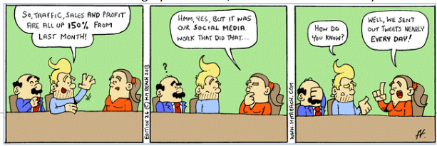
To establish causation, three conditions must be met: a statistically significant relationship between the variables; no other factors that could account for the relationship (ruling out confounds); and correct temporal ordering — the cause must precede the effect.
People are often tempted to interpret correlation as causation because the causal story feels intuitive, because they hold pre-existing beliefs that favor the interpretation, or because their theoretical framework points in that direction. Intuition is not a substitute for experimental evidence.
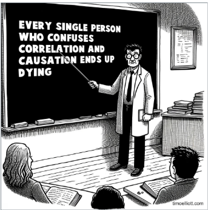
Confounding Variables and the Third Variable Problem
The third variable problem (also called confounding) refers to any variable that is extraneous to the two variables being studied but influences or explains the observed relationship between them. It creates spurious relationships — apparent associations that are actually due to an unseen factor.
Two classic historical examples:
- 1975 Taiwan Study — a correlation between electrical appliance ownership and contraceptive use was largely explained by a third variable: socioeconomic status. Wealthier households were more likely to own both appliances and to use modern contraception; there was no direct relationship between the two variables themselves.
- Early 1900s pellagra in the U.S. South — cases were initially attributed entirely to diet, but the real explanation involved a specific vitamin deficiency (niacin) compounded by poor sanitation and food distribution patterns. The apparently simple dietary correlation concealed a more complex causal picture.
Read more: https://hbr.org/2015/06/beware-spurious-correlations

False Causal Claims
A false causal claim occurs when someone interprets a visual pattern — or any correlation — as evidence of cause and effect without proper experimental or statistical support. Cherry-picking exacerbates the problem: selecting only data that fits a desired story makes the misleading pattern look more convincing and reinforces the false causal inference.
Example: A chart showing that ice cream sales and drowning rates both rise in summer might be presented to suggest ice cream causes drowning. The actual confounder is temperature — both rise in hot weather, but one does not cause the other.
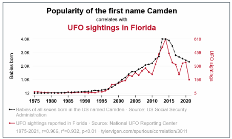
The Directionality Problem
The directionality problem arises when, in a correlation between X and Y, it is unclear which variable — if either — is causing the other. Understanding temporal precedence (which variable came first) is essential for establishing causation, but even temporal precedence is not sufficient if the two variables influence each other in a cycle.
Common examples where directionality is genuinely ambiguous:
- Happiness and exercise — does exercise make people happier, or do happier people exercise more? Probably both.
- Physical exercise and self-esteem — improvement in fitness may raise self-esteem, but higher self-esteem may also motivate more exercise.
- Aggression and video game use — aggressive people may be more drawn to violent games, or violent games may increase aggression — the observational data cannot distinguish these.
Bias in Data and Interpretation
Bias distorts data or its interpretation, making a causal relationship appear stronger, weaker, or entirely different than it really is. Four forms are especially relevant:
- Sample bias — the sample does not represent the population of interest. Example: surveying only gym-goers to study the effect of exercise on happiness — the most sedentary people, who might benefit most, are excluded.
- Measurement bias — the way data is collected introduces systematic distortion. Example: self-reported exercise data consistently overestimates actual activity levels compared to accelerometer measurements.
- Confirmation bias — selectively highlighting evidence that supports a preferred conclusion. Example: citing only studies where coffee drinkers show better health outcomes while ignoring null results.
- Publication bias — studies showing significant or “interesting” results are more likely to be published than null results, skewing the perceived body of evidence toward positive findings.
Storytelling with Data
The Foundation: Who, What, How
Effective data storytelling begins with three questions that must be answered before opening any charting tool:
- Who is the audience? Specificity matters — a chart designed for a data scientist reads completely differently than one designed for a board of directors. Different audiences have different baseline knowledge, different questions, and different thresholds for detail.
- What should they know or do after seeing this visualization? This is the one thing the chart must communicate. If you cannot state it in a sentence, the chart is not ready.
- How will the data support that message? What chart type, what level of detail, what emphasis?
Two tools force clarity in the answer:
- The Big Idea — a single, complete sentence that states the point of view and the stakes. It must be specific enough to guide every design decision. A weak Big Idea: “Sales are down.” A strong Big Idea: “Enterprise software sales fell 23% in Q3 because of three lost accounts that together represent 40% of the division’s revenue — and retaining the remaining at-risk accounts requires immediate action on pricing.”
- The 3-Minute Story — a brief, structured narrative that distills the message to its essentials. Designed for the scenario where you have only 3 minutes with a decision-maker: what are the three things they absolutely must leave the room knowing?
Exploratory vs. Explanatory Analysis
A critical distinction shapes every design decision:
Exploratory analysis is what you do for yourself — scanning data, testing hypotheses, looking for patterns. The charts are fast, rough, and numerous. You might produce 50 charts to find the 2 that reveal something meaningful. Exploratory charts are not meant to be shown to anyone else; they are your thinking tools.
Explanatory analysis is what you do for your audience — communicating a specific, already-discovered finding as clearly and honestly as possible. The chart is polished, focused, and annotated. Every element serves the message.
Example: An HR analyst notices that voluntary departures spiked in Q3. She explores dozens of cuts of the data — by department, tenure, manager, role type — and discovers that the spike was concentrated in mid-level editorial roles reporting to one particular business unit. The exploratory work is done; now she builds one explanatory chart that tells the editorial spike story to the leadership team, annotated with the key observation: “Departures from editorial roles tripled in Q3, concentrated in three teams.”
The common mistake is presenting exploratory charts to an explanatory audience — showing leadership 50 charts “to be thorough” when they need one chart that drives a decision.
The “Two Pearls” Principle
Knaflic (whose work builds on Wilke’s foundation) describes the goal of explanatory visualization with the phrase: focus on the two pearls, not the hundred oysters.
An oyster bed has hundreds of oysters. Most contain nothing. A few contain pearls. When you present exploratory data to an audience, you are making them wade through every oyster themselves — exhausting and unfocused. When you present explanatory data, you have already found the pearls and are handing them directly to the audience. Your job is not to show all the data; it is to surface the two or three findings that matter and make them impossible to miss.
Applied: If your workforce analysis surfaces 12 interesting patterns, your explanatory chart shows the two that directly answer the decision at hand — not all 12.
Success in Data Storytelling Begins Before Visualizing
For example, using Live Data Technologies, we can analyze patterns in employee arrivals vs. departures over time to tell a clear workforce story. The exploratory phase might involve dozens of cuts by department, role, and tenure. The explanatory deliverable is a focused chart showing the key trend — annotated, titled, and designed for the specific audience who needs to act on it.
Reference:
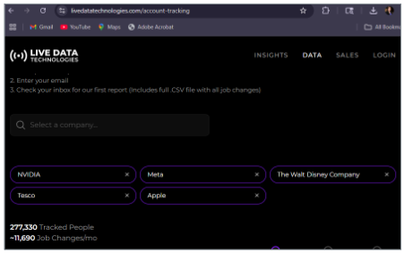
A Six-Step Storytelling Workflow
- Understand the context — define the audience, their needs, and what decision the visualization should support. Who will see this? What do they already know? What do they need to decide?
- Choose the right visual — select a chart type appropriate to the data and the message. Time trend → line chart. Comparison across categories → bar chart. Part-to-whole → stacked bar or treemap. Distribution → histogram or box plot.
- Eliminate clutter — remove gridlines, excess tick marks, legends that can be replaced by direct labels, and any element that does not add information. Every ink mark should earn its place.
- Focus attention — highlight the most important element using color, annotation, or bold text. Everything else should be muted so the eye goes immediately to the point.
- Design with purpose — every aesthetic choice (color, font size, axis range, chart aspect ratio) should serve the message, not just fill space.
- Tell a story — annotate the chart with the observation the viewer should take away. Do not make them figure it out; tell them: “Departures from editorial roles tripled in Q3.”
Worked Example: Applying the Six Steps
Suppose an HR team wants to present employee turnover data to the executive leadership team:
| Step | What you do |
|---|---|
| 1. Context | Audience: CFO and CHRO. Decision: whether to fund a retention program for mid-level editorial staff. They need the magnitude of the problem and which teams are affected. |
| 2. Visual | Horizontal bar chart showing departure rates by department for Q3 — bars make it easy to rank and compare across categories. |
| 3. Eliminate clutter | Remove the legend (label bars directly). Remove gridlines. Remove the y-axis title if bars are already labeled. |
| 4. Focus attention | Color three editorial department bars in red; leave all others gray. Add a dashed line at the company average departure rate. |
| 5. Design with purpose | Set the x-axis to start at 0 (never truncate a bar chart axis — it exaggerates differences). Choose a title that states the finding, not the topic: “Editorial Departures Ran 3× the Company Average in Q3.” |
| 6. Tell a story | Add a single annotation arrow pointing to the highest bar: “Fiction editorial: 42% departure rate — up from 14% in Q2.” The chart now drives action, not just awareness. |